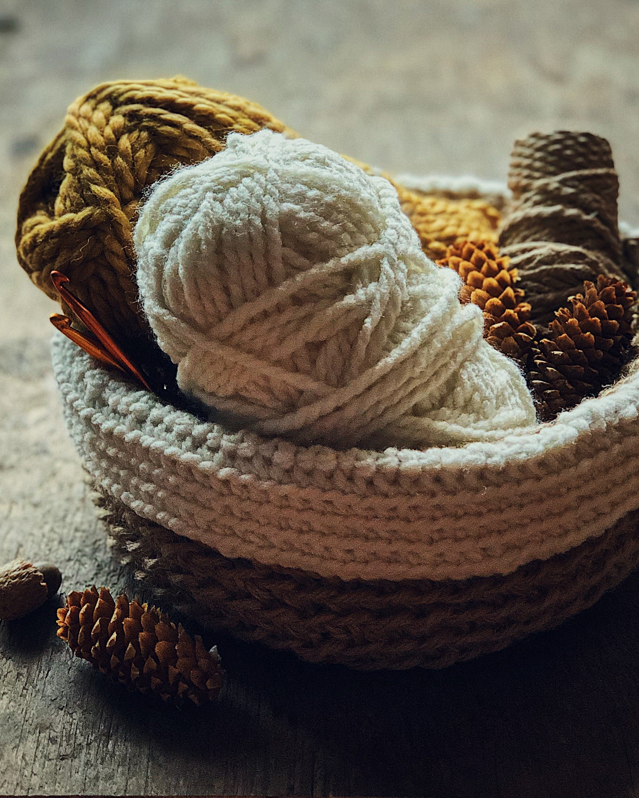
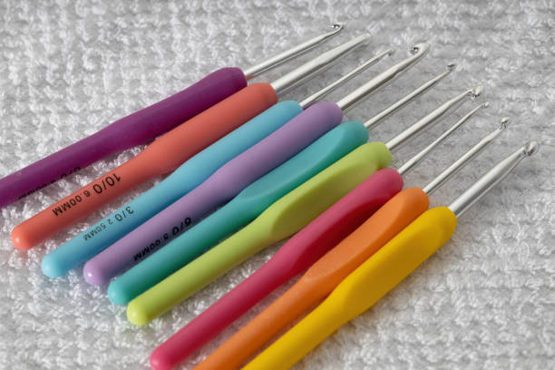
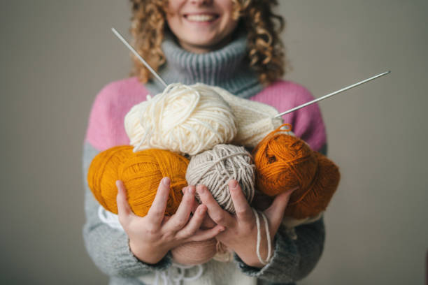
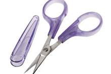

Crochet is a process of creating textiles by using a crochet hook to interlock loops of yarn, thread, or strands of other materials. Welcome to the world of crotchet, a timeless craft that combines creativity with relaxation. From beginners to experienced crafters, crotchet offers a wide range of projects and techniques to explore, from clothing and accessories to home decor and toys. Whether you're looking to unwind, express yourself creatively, or create something special for loved ones, crotchet is an excellent choice!

The process of crotcheting is one that becomes easy and fun in the long run. Starting out is usually not an hard nut to crack, the first style that births into others that graduated into complexity is now being avoided.

Crotchet hooks is the crafter's tool in creating magic with the yarn, interlocking threads into one another and forming quality. Get in different sizes, each resulting in output needed for your product.

Yarn is a twisted strand of fiber used for knitting or weaving. With it, crotcheting is made. It's in different colors and textures that forms the desired shape with hooks as its shaper.

A scissors is needed in crotcheting for cutting out the left-out yarn and trimming the edges where necesssary.